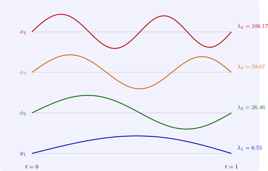

9.3 The Sturm–Liouville eigenvalue problem
Definition 9.3.1. A regular Sturm–Liouville problem is \[ -\bigl (p(t)y'\bigr )' + q(t)y = \lambda w(t)y \quad (a < t < b), \qquad B_ay = B_by = 0 , \] with \(p\), \(p'\), \(q\), \(w\) continuous and \(p > 0\), \(w > 0\) on \([a, b]\). A number \(\lambda \) for which there is a non-zero solution is an eigenvalue, and the solution an eigenfunction. Write \(\langle f, g\rangle _w = \int _a^bfgw\,dt\).
- (i)
- Every eigenvalue is real, and the eigenfunctions may be taken real.
- (ii)
- Eigenfunctions for different eigenvalues are orthogonal: \(\langle \phi _m, \phi _n\rangle _w = 0\).
- (iii)
- Every eigenvalue is simple: its eigenfunctions are multiples of one another.
Proof. (i) If \(L\phi = \lambda w\phi \) with \(\phi \) possibly complex, then \(L\bar \phi = \bar \lambda w\bar \phi \), since \(p, q, w\) and the boundary coefficients are real. Green’s formula, which holds for complex functions as well, gives \(0 = \int (\bar \phi L\phi - \phi L\bar \phi ) = (\lambda - \bar \lambda )\int w|\phi |^2\), and the integral is positive, so \(\lambda = \bar \lambda \). Then the real and imaginary parts of \(\phi \) are real eigenfunctions. (ii) \(0 = \int (\phi _mL\phi _n - \phi _nL\phi _m) = (\lambda _n - \lambda _m)\langle \phi _m, \phi _n\rangle _w\). (iii) Two eigenfunctions for the same \(\lambda \) both satisfy the condition at \(a\), so their Wronskian vanishes at \(a\), and they are dependent. □
Theorem 9.3.3 (Sturm–Liouville). For a regular Sturm–Liouville problem:
- (i)
- the eigenvalues form an infinite increasing sequence \(\lambda _1 < \lambda _2 < \lambda _3 < \cdots \to \infty \);
- (ii)
- the eigenfunction \(\phi _n\) has exactly \(n - 1\) zeros in \((a, b)\);
- (iii)
- the eigenfunctions are complete: every \(f\) with \(\int _a^bwf^2 < \infty \) has the expansion \[ f = \sum _{n=1}^\infty c_n\phi _n, \qquad c_n = \frac {\langle f, \phi _n\rangle _w}{\langle \phi _n, \phi _n\rangle _w} , \] converging in the mean, \(\int w\bigl (f - \sum _{n\leq N}c_n\phi _n\bigr )^2 \to 0\); if \(f\) is continuously differentiable and satisfies the boundary conditions, the series converges uniformly.
Sketch of proof. Choose \(\mu \) not an eigenvalue (possible, since by Theorem 9.2.1 applied to \(L - \mu w\) the eigenvalues are isolated) and let \(G_\mu \) be the Green’s function of \(L - \mu w\). The eigenvalue problem becomes the integral equation \(\phi = (\lambda - \mu )\int G_\mu (t, s)w(s)\phi (s)\,ds\), governed by a symmetric, continuous kernel. The integral operator is compact and self-adjoint on the space with inner product \(\langle \cdot ,\cdot \rangle _w\), and the spectral theorem for such operators gives a sequence of real eigenvalues accumulating only at \(0\), with eigenfunctions that are complete; this yields (i) and (iii), the eigenvalues \(\lambda = \mu + 1/(\text {eigenvalue of the integral operator})\) tending to \(+\infty \) after a shift, because \(\int (pu'^2 + qu^2)\) is bounded below. (ii) follows from the Prüfer substitution \(py' = r\cos \theta \), \(y = r\sin \theta \), in which zeros of \(y\) are crossings of \(\theta \) through multiples of \(\pi \), and \(\theta (b; \lambda )\) increases continuously and strictly in \(\lambda \), by Sturm’s comparison theorem below; each new eigenvalue occurs when \(\theta (b)\) passes the next value allowed by the boundary condition, adding one zero. □
The theorem is the reason expansions in orthogonal functions work. With \(p = w = 1\), \(q = 0\) and Dirichlet conditions on \([0, \pi ]\), the eigenfunctions are \(\sin nt\) and the expansion is the Fourier sine series. With Bessel’s equation, put in Sturm–Liouville form, the eigenfunctions are \(J_\nu (j_{\nu ,k}t)\) and the expansion is a Fourier–Bessel series, used to solve the wave equation on a drum. For singular problems, where \(p\) vanishes at an endpoint, the same results hold with the boundary condition replaced by boundedness, which is how the Legendre polynomials of Theorem 8.4.1 arise. Figure 13 shows the first eigenfunctions of a problem with a non-constant weight.

Questions on this section
Stuck on something here? Ask below and it stays attached to this topic.